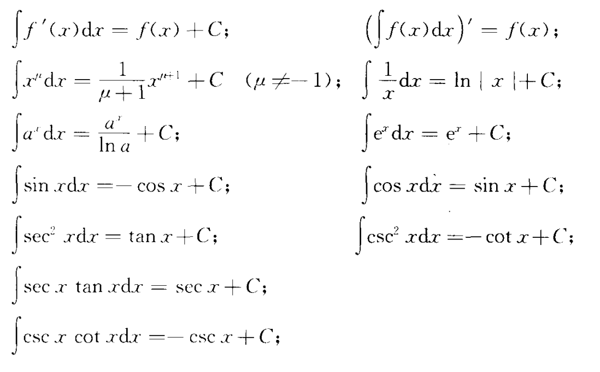
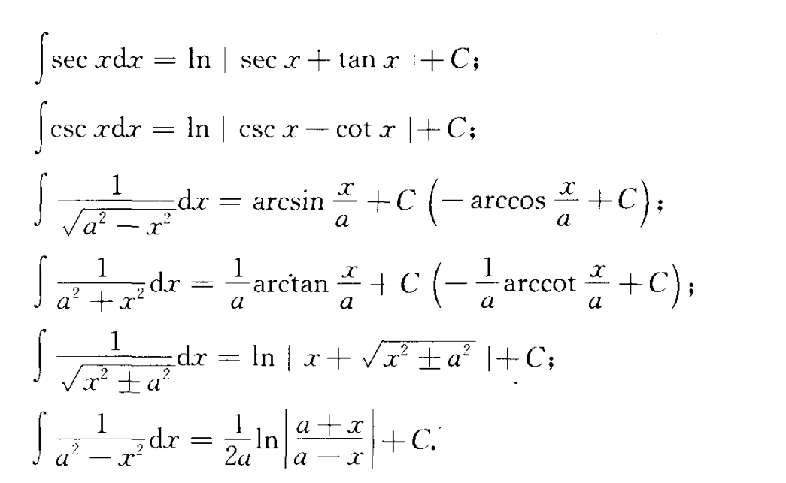
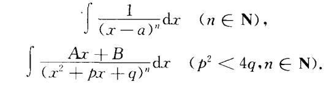
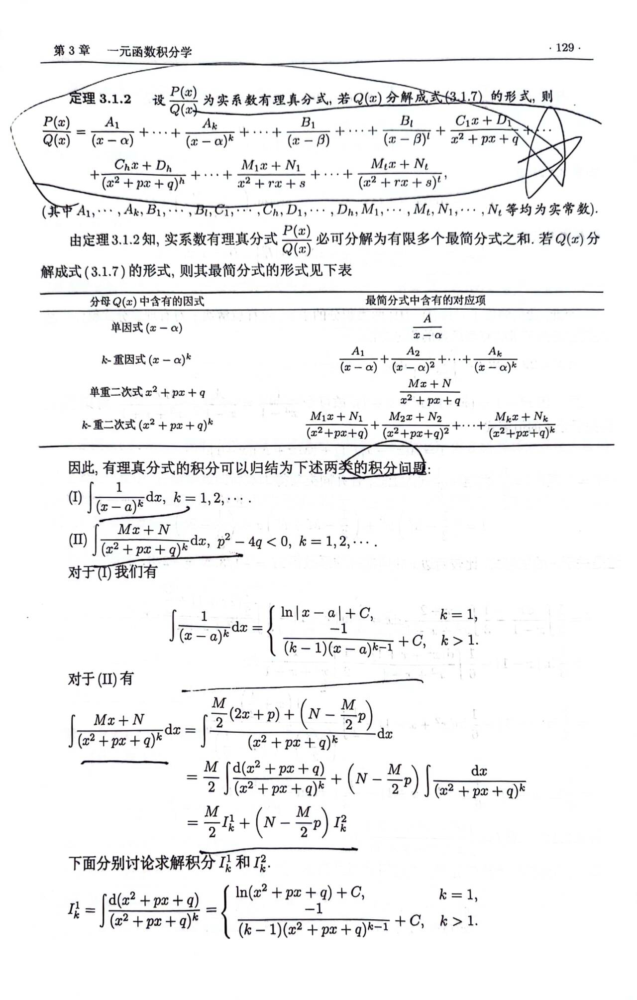
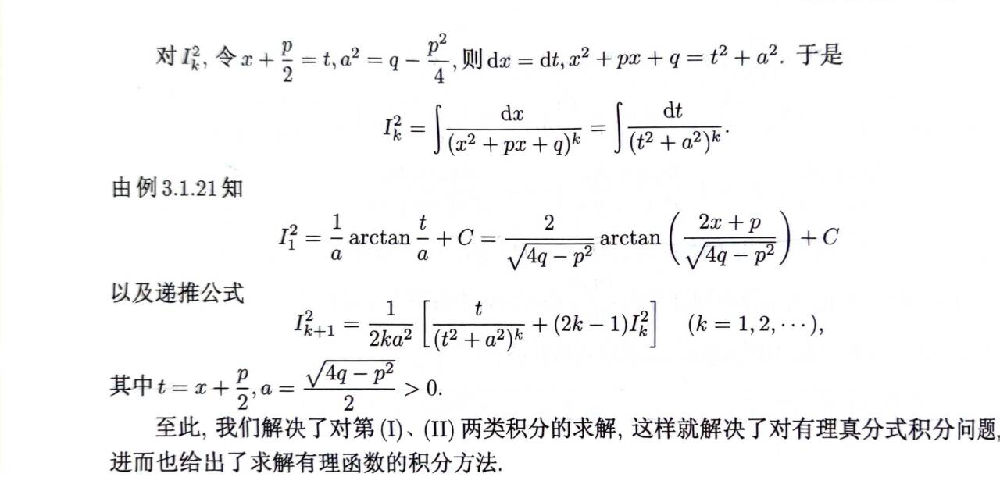
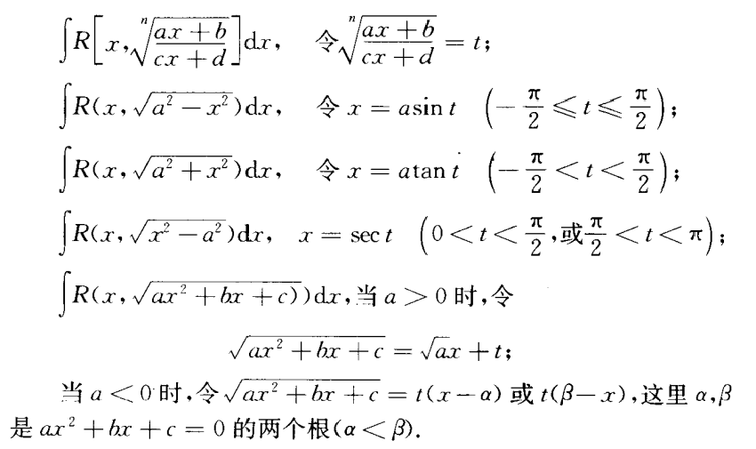
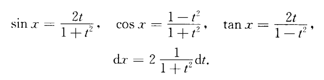
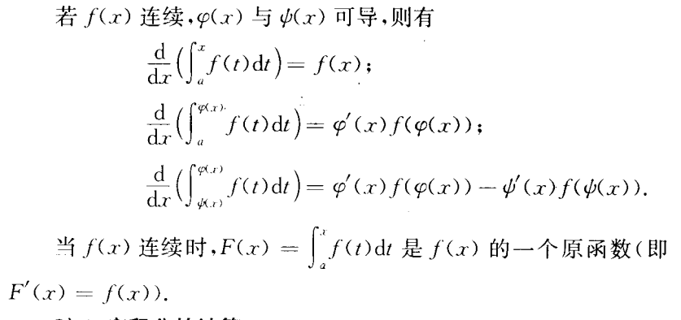

微积分期末复习
3971学习微积分学习复习期末微积分资料2023-12-17
微积分期末复习
第三章：不定积分与定积分
不定积分
常见不定积分公式：


积分方法：
-
换元积分
-
分部积分
-
有理函数的积分
任一有理函数可分解为一多项式和若干分式的和



-
简单无理函数积分

-
三角函数有理式的积分
当时

定积分
定积分的主要性质
-
保向性
若可积，
-
可加性
-
积分中值定理
若皆在上连续，定号（均大于等于0，或均小于等于0）,则存在 ,使得
函数的平均值
变限的积分

定积分计算
- 牛顿莱布尼茨公式
- 换元积分
- 分部积分
- 定积分性质（函数奇偶性、周期函数）
更新时间：2023-12-19 17:54
转载请注明来源，欢迎指出任何有错误或不够清晰的表达本文链接：https://czruby.github.io/2023/12/17/微积分期末复习/